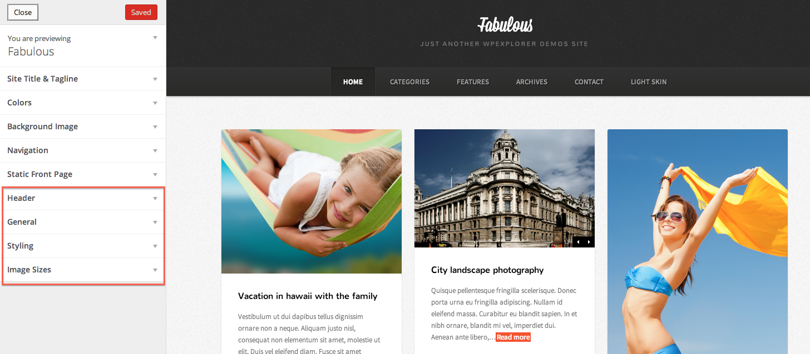
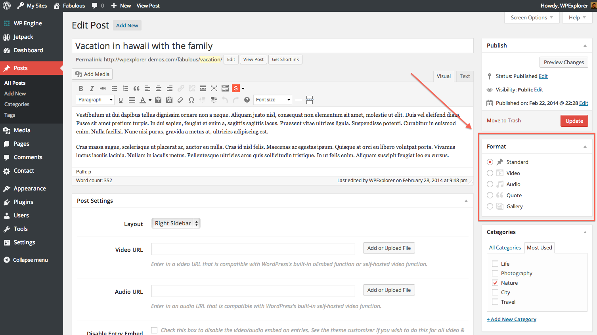
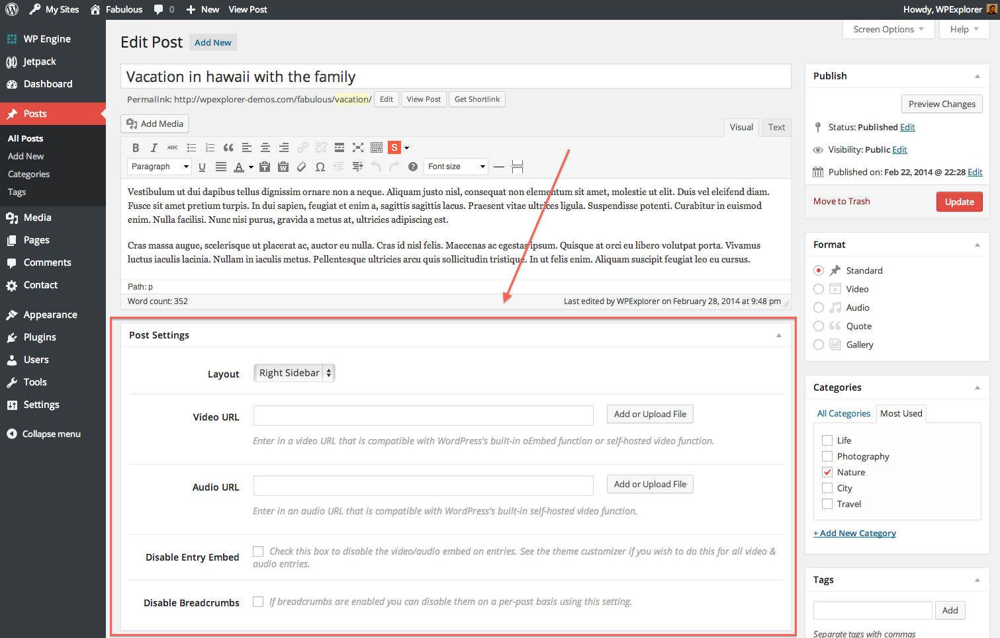
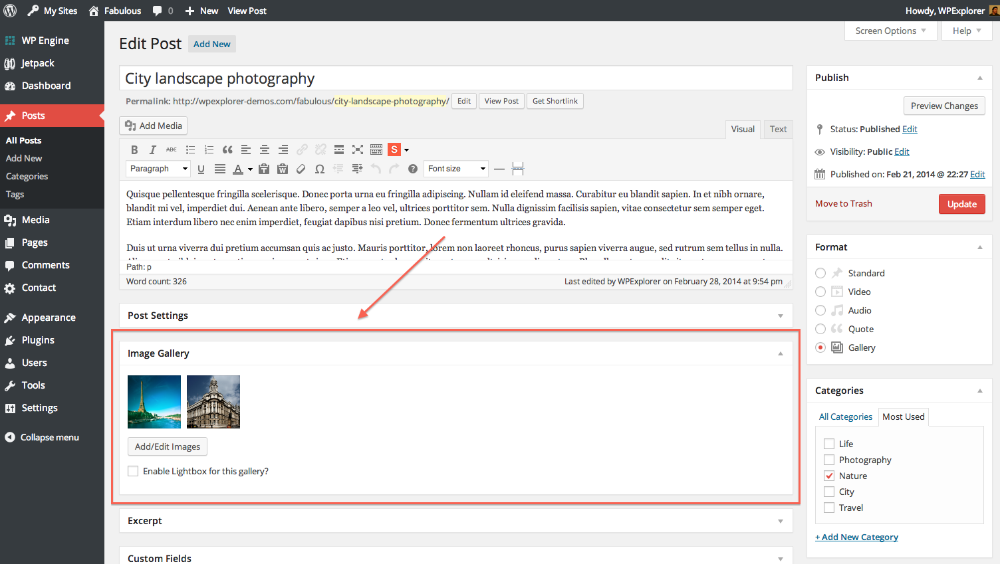
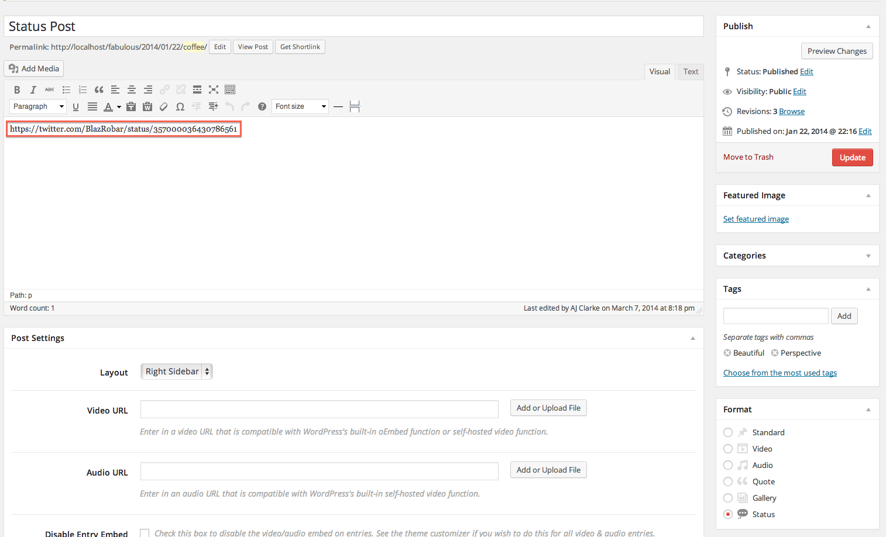
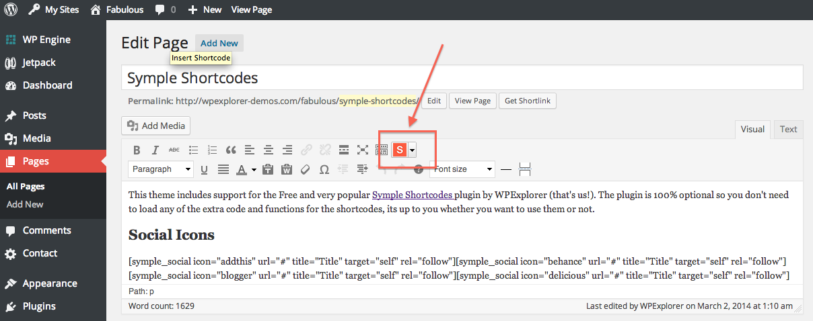

If you find any bugs with this theme get in touch with a clear description of the problem so we can fix it. However we do not support modifications such as: changing the appearance or functionality of the theme.
The following things are required to run this product:
This theme supports the following external plugins to provide functionality:
You'll want to install this theme just like any other WordPress theme, either by uploading the main theme folder via FTP (unzipped) or the zipped file via the Wordpress theme upload section. Make sure you located the main theme folder from the downloaded zip file and that you are not uploading the entire zip with all the documentation, sample data, etc. Watch the
Important:You will not receive the images displayed on the live site with your sample data. I can not legally distribute these stock photos due to licensing restrictions - sorry! It's ok though, because you'll want to add your own anyway!
This theme makes use of the WordPress Theme Customizer for all your theme options! Simply go to Apperance->Customize and you'll find all the theme options there.
This theme is so easy to use! If you know WordPress you'll know how to use the theme ;)
The theme includes support for a few WordPress Post formats. So when you add a new blog post you can select a specific post format depending on the type of post you are adding.
All the posts also come with some handy post settings that are useful for the various post formats (adding video/audio links) or for changing your layouts (for example if you want a blog post to be full-width)
Note: Adding the video/audio urls for the respective post formats is NOT required, you only have to do this if you want it to display at the top of the post like the featured image. You can choose to insert these into your post content directly if you prefer then use the setting to disable the featured image on the post if needed.
Using the "Gallery" post format you can add a slider to any blog post with ease. Simply select the post format and then use the "Image Gallery" metabox to add your images. Simply click on "Add/Edit Images" and select the images from your media library then click the button on the bottom left to add them to the gallery. You can hold down "command" on a Mac or "control" on Windows to select multiple items. Once added to the Gallery save your post! You can always click on any item in the gallery to drag/drop it to re-order the image as well as hover over it and click the "x" to remove it from the gallery. Have fun!
For the status post format simply insert the URL to your twitter tweet (or other oembed compatible link - twitter is the only one that is fully supported in the infinite scroll) into your post content as shown in the screenshot below. For those who were using GoodInc in the past no need to update old posts, I've added a fallback!
Contact forms are not built into a theme (for many reasons) so we recommend using a 3rd party plugin for this. The free one we like is Contact Form 7 and the premium one we like is Gravity Forms both can be used to add forms anywhere on your site! We won't support the plugins, but they are the ones we recommend.
For the live demo we simply used the recommended Symple Shortcodes plugin to insert a google map at the top of the site and then used the Contact Form 7 plugin to add the form below it, pretty simple stuff!
This theme doesn't include shortcodes built-in because it's not a good habit to do so. We've created a plugin though which you can use and it's totally free. The plugin is called Symple Shortcodes. You can download this plugin over on github and check out the available parameters here.
When the plugin is installed and active you will see a new icon in your editor which you can use to insert your shortcodes
{kind=link}
{kind=link}
{kind=link}
{kind=link}
{kind=link}
{kind=link}
{kind=link}
{kind=link}